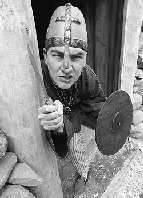

Med ett er du 1000 år tilbake i tida. Det foregår en travel aktivitet. Snart er du omgitt av dem på alle kanter - vikingene! De bygger, smir, hyler og skriker, koker, spiser, raper og sover. Og innimellom har de et durabelig oppgjør med fienden. På utkiksposten sitter vaktene og speider etter enda flere fiender. For vikinger har kampblod i årene.Det arbeides iherdig på vikingskipet, og innimellom er det kjøpslåing. Et skip ligger allerede og duver i vannkanten, mens vikingene lesser og losser. Ved gravhaugen er en høvding klargjort for sin siste reise.
Du vil ganske sikkert bli revet med fra første stund. I VikingLandet ved TusenFryd lever vikingene på ekte vikingvis. De jobber her, bor og lever her. Både fordi de synes det er kjempegøy, og fordi du skal få oppleve en ekte vikingkultur. Tør du gå videre?
Ved Leikvollen er det bueskyting, idrett og lek, men i det du passerer Tingplassen blir det straks mer alvor. Her holdes rettsmøter, og mang en viking vil få sin dom her. Ravnejenta er ekspert på urter og gir gode råd for små og store plager.
Dramatisk tokt
Men vikinger drar jo på tokt. Og hold deg fast, for du skal være med. Inn i fjellgrotten og opp i Osebergskipet. Det bærer mot Vinland og Leiv Eiriksson staker kursen. Under den farefulle ferden blir det stormer og angrep fra andre vikingskip, for ikke å snakke om fryktinngytende sjøormer. Du oppdager nytt land og opplever de norrøne guders mystikk.
Skulle du bli sulten i VikingLandet kan du bare glemme cola og hamburgere. Her skal det spises og drikkes på ekte vikingvis. Derfor kommer det både tørket og grillet kjøtt, barkebrød, mjød og cider på bordet. Etter et skikkelig måltid kan du ta en tur i smia og få smidd dine egne smykker og mynter. Spennende? Jo, men husk at det er Jarlen som hersker i denne dalen, og han er ikke til å spøke med. Men om du kommer velberget fra det har du opplevd en levende historietime du aldri glemmer!
Priser: Kr. 90,- for voksne og kr. 50,- for barn (under 140 cm).
Åpningstider: 10.30 - 20.00 fra 7. juni til 20.august. Etter 20. august kun lørdager og søndager. Det er også mulig å kjøpe kombibillett for både TusenFryd og VikingLandet.
Opplysninger: Tlf. 64 94 63 63.